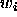
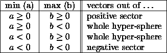

For Counterpropagation networks three initialization functions are
available: CPN_Rand_Pat, CPN_Weights_v3.2, and CPN_Weights_v3.3.
See section  for a detailed description of these
functions.
for a detailed description of these
functions.
Note:
In SNNS versions 3.2 and 3.3 there was only the initialization
function CPN_Weights available. Although it had the same name,
there was a significant difference between the two. The older version,
still available now as CPN_Weights_v3.2 selected its values
from the hyper cube defined by the two initialization parameters.
This resulted in an uneven distribution of these values after they had
been normalized, thereby biasing the network towards a certain
(unknown) direction. The newer version, still available now as
CPN_Weights_v3.3 selected its values from the hyper sphere
defined by the two initialization parameters. This resulted in an even
distribution of these values after they had been normalized. However
it had the disadvantage of having an exponential time complexity,
thereby making it useless for networks with more than about 15 input
units. The influence of the parameters on these two functions is given
below.
Two parameters are used which represent the minimum (a) and maximum (b) of the range out of which initial values for the second (Grossberg) layer are selected at random. The vector

of weights leading to unit i of the Kohonen layer are initialized as normalized vectors (length 1) drawn at random from part of a hyper-sphere (hyper-cube). Here, min and max determine which part of the hyper body is used according to table
